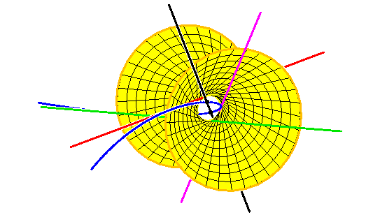
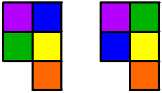

Frontiers of reality in the Schubert Calculus
Frank Sottile,
Texas A&M University
Thursday, 21 June, Centre de recherches mathematiques
Workshop on Real, tropical, and complex enumerative geometry



 Frontiers of reality in the Schubert Calculus
Frontiers of reality in the Schubert Calculus